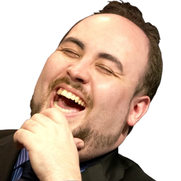

A Secret Story by EternaLEnVy
Disclaimer: alright this is one fucking long ass blog. But I heard James' blog was 17 pages, this ain't as bad.Team Secret, a transparent organization for the players, this is what everyone first thought. I was proud to be part of such an organization when I first joined the team, I’m sure everybody was then. I asked Puppey whether it was difficult being a player and an owner. I was told that it wasn’t a burden, but instead something that empowers him, that I shouldn’t worry, just focus on the game. I was told that Kemal is a very successful man with multiple global businesses and he'll take care of us.
Sometimes at a LAN we would talk about the future of Secret, Puppey would talk about how other organizations are fucking their players and how Secret will be different. That Secret will be the first team in DotA to get a 5 figure monthly salary. At first I thought it was just a joke, or something simply hopeful. But as we had the same conversation over and over again I started to believe that it could be real. Although during these times I didn’t get paid any salary, I didn’t think much about it and still chose to believe. I’m sure the rest of my team did as well.
Here we are now, after more than a year has passed. After talking to a multitude of people, including previous Secret members, I have decided to write this blog.
Tournament Payout Delays
On February 16 2016 I was at the Secret Turkey bootcamp when Evany’s blog: http://www.twitlonger.com/show/n_1soaufn was posted. I didn’t really think much about it as I had Shanghai Major soon and DotA was all that was on my mind. I remember Kemal and Puppey talking to the team about the whole incident. How it’s Starladder’s fault for making their bank account blacklisted, how it’s Matt’s fault for not responding to emails while he was at the hospital, how N0tail/Fly/Evany are stupid and don’t have the right to complain, and how Evany doesn’t deserve any money, and that she's only being paid out of the kindness of their hearts. Excuse, after excuse, without ever taking any blame.
After the blog came out Kemal and Puppey assured us that it wouldn’t happen to us. Well, it did.
When a tournament pays out the money to Team Secret, Team Secret does not split and pay out the money to the team. It just sits there, and unless you hound them for it the money won’t move for awhile.
Misery was still owed 182K USD up ‘til September 26 2016 where he was finally paid that amount all at once. You expect an organization to send you the money when they receive it, obviously this isn’t the case with Secret as shown once again. I was missing 36K USD til September 14, why I was paid most of the prize winnings months ahead of Misery, or why I’m missing a random 36K USD at the end I’ll never know. But if Kemal can finally sit down one day and send me some prize winnings, why wouldn't he also send the rest of the team that money? There’s some shady shit going on.
Misery wrote his own blog regarding his situation and his thoughts: (Link) I’ll just add one quick note, communications moved along a lot quicker once I changed my steam name to “blog boy” XD.
Not only does the process of Secret paying out their players get delayed. But also process of Tournament Organizers sending out money to Secret. People blamed Matt for taking forever to respond and do things in regards to payments, but now that Kemal has taken the reins it hasn’t changed at all. Just one example, Epicenter has already paid EG months ago. I messaged Epicenter to ask how come payments are delayed and they responded:
Hey,
Sorry for delay on this, had a flight to Kiev. I’ve seen the payment confirmation, it’s been paid out on September 9th.
But yeah, it took us 3 months of continuous reminders to get the invoice from Team Secret.
Worse off, when I confronted Kemal about the Epicenter payment delays, he claims that he “doesn’t know” why and that Epicenter said they will pay on Oct 7. The lies just won’t stop.
10% Winnings Cut
Not once on Secret have we ever talked about having a prize winnings cut to the organization. We have however discussed the complete opposite where we would talk about how it's stupid to have a % prize winnings cut in DotA because of its abnormal prize pools. It was understood by everyone on the team that there would not be any prize winnings cut to the organization. Well, every player but Puppey.
Throughout the year I’ve been sent money in very random amounts, and I had no idea which tournaments the money came from. I’ve asked Kemal many times throughout the year to tell me what the money is for whenever he sends me a transfer but I didn’t get a report till Sept 8. I found out there's a 10% Organization cut from reading the “rate” column on the spreadsheet. We were actually never informed of this. The current players of Secret also don’t know there’s a 10% cut. Here’s what Pie (who’s currently on the team) said when I told him:
12:09 AM - Rem: did u get paid ur prize winnings
12:09 AM - Rem: did u know theres a 10% prize winnings cut
12:09 AM - Rem: secret takes
12:10 AM - LITTLE HUMBLE RABBIT: u sure
12:10 AM - LITTLE HUMBLE RABBIT: that doesnt sound right
12:10 AM - Rem: im 100% sure
12:10 AM - LITTLE HUMBLE RABBIT: jesus
Jesus indeed. When I found out about this and told everyone, everyone gave me the ?. I confronted Puppey about this and this was his response:

I honestly have no idea what he means by his talks with Kemal and his lawyer. He then starts talking about player salaries. Contrary to popular belief, Secret 3.0 never had any player salary. So although Secret at that time was a top team in both popularity and tournament placements, not only did Kemal/Puppey not secure any sponsors but instead they took 10% of our money.
Secret later on did have salary for 3 months, but all that money came from PandaTV. I will be talking about the PandaTV situation later, for now I’ll just mention that Secret took almost 50% of the money in the PandaTV sponsorship. And their excuse for taking such a large %tage of sponsorship money was to pay Matt as well, so what money exactly is being paid to Matt? Although I’m mentioning Matt now, TBH it was a pleasure working with him, he’s an extremely smart guy who works hard at a LAN. Although he indeed did fuck up, he was in a hospital for some months for a serious medical condition, and the main culprit for the problems was Secret not setting up a bank account and that’s not Matt’s fault at all. I hope he actually does get paid though because there’s a lot of rumors going around that he hasn’t for a long time. Throughout the year the weirdest interactions with Matt would be whenever I ask him whether he gets paid, he’ll just be sad and ignore me.
Secret's Ideology for Sponsorships
Throughout Secret’s creation after TI4, Secret has always been a fan favorite. Being one of the most popular teams and one of the best throughout (well maybe not one of the best after Shanghai Major T_T). Then how is it possible that Secret hasn’t been able to provide salary to any player except until the last 3 months? As I mentioned in the introduction sometimes the team would talk about sponsorships. Often Puppey would talk about how sponsors are cheap stakes that are offering us dirt, and we won’t work with such sponsors. We will not be working with any sponsors for gaming peripherals, because it’s not cool (steelseries, etc). Apparently we are in the works with real sponsors offering real money and it won’t be long till we reach 5 figure salaries. “Trust” and “you know me” was thrown around alot and in the end it was just all hearsay.
I will talk about the PandaTV deal specifically later for now let's go over everything else.
For the remaining sponsors 100TB, Nvidia, and EGB, I’ve been told that all 3 sponsors have not paid Secret any sponsorship money. Two of the deals (100TB and Nvidia) entailed no money and EGB who is suppose to provide money hasn’t paid. It’s just funny how other organizations are flamed for getting into deals that provide low amounts of money only for Secret to get into deals that don’t provide any money
Nvidia offers video cards but I still haven’t received it yet even though I’ve been told I’ll get one since the partnership. At first we were promised the 980 card but then it got postponed. It got further postponed when we were told instead of getting that card we'll wait for the 1080 to come out and we'll get that one instead. After the card came out there wasn’t enough supply for for us and we still haven’t received the video cards yet.
EGB is a betting website that was suppose to be a sponsorship deal paying cash. Apparently they have not paid any money and Kemal says “I wished they paid.” Somehow they are still working together so EGB probably paid up (and Kemal is probably lying), but the previous members of Secret that also played under that sponsorship will never see that money.

As for MetaThreads the Jersey sponsor, Puppey has mentioned that the money from the jerseys isn’t much and that it will go into paying for food and other expenses. Secret has claimed to be open about everything and transparent but they have never told us how much they make from them even though I’ve asked sometimes.
Puppey and Kemal have always treated us to dinners at every LAN and always said “its ok I’ll pay for the food.” I remember one dinner at Manila, Puppey said he’s not sure if he's suppose to tip but he’s going to, and I told him it’s not necessary to tip in asian countries. He responded: “Why don’t you pay then?” Now I realize that the things Secret “paid for” in reality came from our prize winnings.
When Kemal came to Manila Major, he got himself an executive suite and told us we could buy whatever food we want and charge it to his room no problem. Well we did just that, and I’m sure that money came from the prize cuts in the end ;D.
I’ve always been a player who believes that solo rooms are very important at LANs. I’ll be doing that for NP too if we ever qualify for any LAN T_T. Anyway, Secret usually helped us secure solo rooms, though usually the tournament gives special treatment and provides it themselves. Many times I told Kemal I’m willing to pay for my own room if the tournament won’t provide it and he would respond “naw man I got you covered don’t worry about it just play your DotA.” If we’re covering for it ourselves indirectly, just tell us.
It’s not like the players expect everything to be provided, we understand that we will lose something. We just thought things would be transparent as claimed. We want to know if the player’s money is gonna go into something.
The bootcamp setup in Turkey was quite nice. The players understood that some of the Panda money will be going into paying for it. However, the Panda deal falls apart within 3 months, due to Puppey not fulfilling his streaming hours. I hope Kemal didn’t mean that he will pay off the rent for the entire year with the first payment from Panda. Flights to the bootcamp and etc, we were always told to not worry and that Kemal will cover for it as well.
PandaTV deal Explanation
(Sorry if this part of the blog is long, I don’t really know how else to write this part except to give near the full story.)As I said earlier there were 3 months where we received a salary, this money all came from the PandaTV deal. I will be explaining how this deal came about and how it was dealt with till the end.
There was a short amount of time between StarLadder I-league Season 1 and MDL S2. I asked my team if we were going to scrim for this tournament and it didn’t seem like we were that interested in doing so. So I decided that it would be better for me to fly directly to China from Starladder so that I could get use to the jet lag instead of flying home and immediately in a few days fly to China.
As I still needed a legit place to play at I set up a deal with HUOMAOTV to let me play at their office and pay for my hotel in exchange for me streaming for them.
I got massive viewers during this time because the Chinese fans love watching chinese players flame me and me smiling and not knowing what the hell they are talking about.
I’ve heard many stories of Chinese streaming deals being extremely high in payout and at this time Secret was in talks with Twitch for a deal. I thought it would be interesting to see if any Chinese platforms would be interested in sponsoring Secret.
During that week I contacted Panda and arranged a dinner with one of their top executives. Streaming deals in China are normally player only deals, they offered me 500k USD (this is an extremely high number in comparison to normal Chinese deals even) but I told them I will not cooperate unless my teammates get a deal.
Had I taken the deal, probably could have been signed in February but since it's now more complicated as a team deal the process took longer. Fast forward till March, we win Shanghai Major, and we have another meeting with Panda. At this point in the deal the deal was 1 million + 250k in donations for the year and if we get RTZ/Universe it would be 1.25 million + 250k in Donations. The money would be paid quarterly at the beginning of the quarter. We also talked about the number of hours to be streamed.
For Secret there were two goals in this meeting, to negotiate a price as high as possible while also negotiating the lowest number of hours streamed a month as possible. At first everyone had a minumum streaming requirement, but we negotiated that it’s only important that RTZ, me and Puppey have this requirement. Puppey said he could stream 40 hours every month but I told him it’s fine if you have lower hours and you add those hours to mine. I believed that RTZ would stream but I knew Puppey doesn’t play much. I asked Puppey if he's going to start playing more and stream and he assured me that he could do it, and it’s time for him to play more DotA.
The final deal consisted of minimum stream hours of 30 for both RTZ/Puppey and 60 for myself. However the team all together had to stream 250 hours a month. We can make up for these hours within the quarter if we fail to monthly, and honestly as long as we stream a good amount Panda won’t care. During that meeting we understood that in order for the deal to work out, I would need to stream more hours to make up for the rest of the team. I assured Puppey/Kemal that I could stream about 90 hours a month and that I won’t fail to uphold my part of the deal.
Fast forward, here are the hours that we streamed from Mid April till the end of June (monthly). I actually kept streaming even after all these months but we failed our end of the deal so I never received another team hour report. Noticed that not only did Puppey not uphold his end of the deal, but he didn’t even try. Streaming not 30 hours a month as promised but 12 hours in 3 months. We were actually together at the bootcamp for a large portion of these months, so if I could stream why couldn’t he? If we weren’t in scrims, he was either playing custom games, playing guitar, or going out and doing who knows what with Kemal.
Regardless as we were paid quarterly, we received our payment for the first 3 months of streaming. The amount was 1.25 Million / 4 = 312.5K USD. The 250k in donations will come at the end of the year, since the deal died early we can ignore all that. The only cash we can talk about is this 312.5K USD.
Anyway TI was approaching and I didn’t really think much of it till TI was over.
TI ends and I decide to create my own team. Secret wants to sponsor us as Secret.NA. I will be going over some of these logs, however I will post all of them.
A classic discussion between you and Kemal. A lot of big name sponsors being thrown around. How are these sponsors “active” when we haven’t been receiving shit from any of them but Panda. There’s no possible way both PandaTV + HuomuoTV are active as they compete and its the same for RedBull + Monster. I talked with management from other organizations and they all told me there’s no way any sponsor like Coke Cola is interested in Secret.
Not much was said, I didn’t really want to respond once he named all those sponsors.
Gatorade 
He flames me a bit here :(
15K monthly salary guys
I already talked with Panda and understood the deal is completely dead.
BULBA T_T
This is the classic excuse Kemal uses. You’ll see this vacation excuse later on in my blog and in Misery’s as well. Apparently the handling of money isn’t messy at all. He never emailed me a list several months ago that’s bullshit. I can’t find it in either of my emails.
As I thought it’s bullshit, he can’t remember where he sent the list.

We talking about the Nvidia Video cards we were promised 8 months ago. He says he’ll get the cards to us in 2-3 weeks, it’s been 6 weeks since that conversation.
How can he be so confident that the deal is going to happen. I’ve already been talking to the Panda guys. It’s 100% not happening, same bullshit.
Both pre Shanghai Major, and during a dinner after Shanghai Major, we were promised that when we get this Panda deal we will get a minimum of 12K monthly salary. Even 14-15K is highly likely. This was said by both Kemal and Puppey. At this point in time the deal was 1 million USD + 250K in donations a year. With the roster change, the new deal is 1.25 Million + 250K in donations a year. Notice that if we take out the donations from the second deal, it just becomes the first deal with the donations (1.25Mill = 1Mill + 250K in donations). What this means is that there’s no excuse for Kemal saying we lose 4K in salary because we aren’t receiving the donations. For us to have the same salary when there’s an increase in 250K in the deal after RTZ/Universe joined the team is already fucked up.
We received 3 months worth of payment because payments are done quarterly. 1.25Mill/4 = 312.5K USD. 120K goes to the players (5players * 8K * 3 months), 3K goes to Distilled (1K*3), 45K goes to coaches/manager (Aui/Theeban/Matt). There’s 144.5K USD left or 46%. Sure maybe Secret isn’t pocketing this money, they will use this money to pay their other games, SEAcret, and the entire house rent for the year. But that’s fucked up. That money came directly from the team, and half of it shouldn’t go into things unrelated. It’s sad that I cannot say who is still missing their salary because a lot of people still haven’t been paid. Maybe later I will be given permission and I’ll say it. But Secret is actually holding a lot more money and I’m actually giving them way more credit than they deserve.

The 100TB guy tried his best to do what he said, he didn’t fuck anyone. The only guy he fucked was Kemal by out negotiating him.
It’s not the first time I heard about the 100TB deal, but it's the first time I heard that all other sponsors aren’t paying any money like EGB
I fucked up and mistakened him talking about the panda contract for our contracts
I’m just raging embarrassingly im sure.
After this I went and messaged Puppey 2 days later:
failed math regardless still a large portion of money missing
15K monthly salary after Panda Sponsorship as discussed
The deal was set up for DotA only, and only 50% of it goes back into DotA
I don't understand why donations keep being mentioned, I am only discussing the 312.5K USD that was already sent and received.

He never said 8K
Puppey claims that the money is only deserved by 3 people (RTZ, Me, Puppey). I actually assumed from this entire conversation after it was over that RTZ/Me and Puppey would be getting the 15K monthly salary and the rest would stick with 8K. It’s a bad assumption from me.
After this I understood that “I promise you we will get the correct share as I promised before” and “I’m trying to make things right” meant that we will be receiving the 15K monthly salary as promised. I was apparently wrong as we will see later.
I don’t understand why things need to be postponed, there’s no reason to wait. I am only discussing the money that is already in their pocket.
Ok I will write that story. But TBH I wasn’t gonna write a story because I thought I would be given the 15K monthly salary as promised, and I didn’t wanna write something where I’m only gonna talk about how my payments have been delayed and they are super lazy. However, Misery/W33 came to me and told me they were also having problems. After this I decided to actually write the blog but I wasn’t even gonna talk too much about Puppey. But after realizing that Secret took a 10% Cut only a few days ago, I’ve decided to talk about Puppey as a whole. This will come after this part of the blog.
This conversation happened on a different day. I believed from our previous conversation that “I will get the correct share as promised before” meaning 15K. He just reads it and ignores me.
This is the day I found out there’s a 10% cut, TBH had Kemal not wrote 18% Rate on the excel sheet, most likely no player would have ever found out ever.
I don’t understand why is Kemal’s lawyer involved all of a sudden. 90% of the prize money we won came from Shanghai Major or before, and we never had a salary then. And the salary came directly from the Panda deal.
No we have never ever talked about having a tournament cut. There’s no way the 10% is basically paying the manager. Secret won over 2 million dollars this year, 10% of that would be 200K USD (excluding TI winnings). When we played TI, valve makes you sign an agreement for cuts. And of course there was never a 10% cut of our TI winnings because we never agreed on any in the first place.
I’m gonna go over the remaining logs with Kemal after the first talk with Puppey (the 2nd talk may be after these logs). Honestly formatting all this is so hard, I’m not even sure if it's showing anything, but i’m gonna do the rest for completion’s sake. I did cut white out some stuff though as I was not given permission to discuss it from other parties and it's not important anyway.
I’ll send it tomorrow, I gave him 2 days instead, once again tomorrow!
I’m actually so confused why this “office” matters. There’s no way there are things he absolutely needs from this office that he owns himself. Anyway is he even reading what I’m saying. I’m saying I’m owed 21K because of the promise of a 15K monthly salary. He doesn’t seem to deny it. But later on you’ll see that he does. W/e ask him on monday guys.
Hey its fucking tuesday, he’ll look tomorrow I guess. What the fuck do you mean I’m wrong, tell me that earlier instead of wasting some days.
Does Kemal and Puppey even communicate with each other. How does Puppey tell me he hasn’t heard what I talked to Kemal about and now vice versa.
I asked Epicenter, Secret already got paid. Did he even check honestly; probably not.
This is once again around when I found out there's a 10% cut. TBH I would have never realized if W33ha didn’t tell me there’s a lot of money missing and I checked this.

Come back Kemal… I need you! Why you always gotta leave me every other week T_T. N give me my video card.
Anyway, I went over the entire story of the Panda incident. Basically the bottom line is that the first sponsor that provided money to Secret wasn’t even sought out by them. Then Puppey himself failed to uphold the streaming hours and failed the contract. Afterwards they lied about the salary and withheld 46% of the Sponsorship money for non DotA related things (Manager, Coaches already accounted for). A lot of the people they supposedly paid salary too weren’t paid anyway.
Puppey
Puppey and I were very close for the majority of the year. He was never a guy that praised anyone really, usually he would rant about everything, flaming everything. One time at MDL as he was flaming some people, I asked him: how come you always flame everyone, is there anyone you even like. He responded “well…. I like my Mom, my girlfriend… you.” It was a pretty gay moment but it was really memorable to me. After Shanghai Major, we talked and he told me that I’m the best teammate he's ever had and that he would like to play with me forever. Back then, I said the same to him. I remember during Epicenter, me and RTZ played really bad one game and he only said some minor things about me then argued with RTZ for a long time. RTZ asked him: hows this fair, why aren’t you harping on Envy more. Puppey responds: because I know him, he’s a good friend, and he gets it already.
I will go over more stories later, but for me the true redefining moment was post TI. After we lost to LGD a valve employee asked Puppey to do the loser’s interview. He responded: “Why don’t you ask the person responsible for losing us TI to do the interview (implying me).” I wasn’t there for this, but some of my ex teammates responded “that’s not true.” Afterwards we don’t talk for a few days, even when we bump into each other sometimes at the practice room we don’t even look at each other. During these days he talked with some of my ex-teammates trying to convince them that TI was all my fault. I don’t have a problem with any of this TBH. My problem comes from the day of the Grand Finals. At this point Secret was already trying to sponsor my new team. Puppey and I meet up in a venue suite, he tells me that we should stay friends. We talk a lot about the year, and he blames Artour for everything that happened to Secret. I tell him, “I don’t really care for any of that. I just thought I was just gonna be another one of your ex-teammates that you will flame to everyone. I thought you hated me and think I was the one responsible to losing you TI”. He says “No I never blamed you for anything, who told you that?” (trying to get the rat out). Then he comes up and hugs me. That hug was probably one of the angriest moments of my life.
Laziness
Puppey is one of the most accomplished players in the scene. I will not take anything away from that. I am not gonna dismiss his skills or whatever, I only want to talk of his personality. It’s true that he is a charismatic person with high confidence, but now I believe that he builds his confidence by looking down on everyone else.
Throughout the year he has always been lazy. At first I thought that he was just burnt out after losing TI5 and I accepted all that but eventually I realized it’s just how he is. All the way till the TI bootcamp in late mid June, he almost never plays any pubs. He played like on average less than 5 pubs per month. This only changed when TI was approaching and one time where he played 10 Earth spirit games after MDL. He would always claim that he was busy from Secret and other responsibilities. But even during our bootcamps or the tournament itself, he would only be playing custom games. Now if he doesn’t need to play any pubs then that’s all fine, the problem is that our captain would generally not show up to the practice room at all. This happened at every major except Shanghai Major. For Frankfurt Major he probably played 20 hours of Legion TD, and that’s a lot considering he rarely came to the practice room. Against Vici Gaming, our match was scheduled to start at 6 PM only for him to show up at 5 PM. Everyone was like “Where’s Puppey?” There was a break day between the VG Series and the EG Series, so Puppey decided to get drunk and sleep at 6 AM. The following day, he didn’t show up to the venue at all.
Fast forward to Shanghai Major where we barely scrimmed (till Shanghai Major bootcamp), and Puppey playing very few pubs. At Shanghai Major one huge thing changed, Puppey didn’t start playing pubs all of a sudden, nor did he stop being late almost everyday, but he actually showed up to the practice room every single day. He played two pubs that event, for one of those games instead of drinking during the break day he actually msged me and told me to come play a pub with him. He didn’t drink a single time that event till the after party. At the practice room he was still playing only Elemental TD but at least he was there so morale wasn’t lost.
Fast forward to Manila Major, things didn’t really change. He didn’t play any pubs as per usual, and even though we got this streaming deal, he didn’t play any pubs to uphold deal that either. Maybe at home he may be very busy, but at a bootcamp/event where we’re all together, there’s no way he's that much more busy than any of us. Enter Manila Major, we decided to all be at the practice room by 10 am everyday. That night he stayed up and drank with PGG and had a hung over the next day. He doesn’t show up for our scrim against Newbee at around 3 pm and we had to use our coach Theeban as a standin (2404412433 match ID too bad it’s not available).
At this point of the team, there was a lot of cancer going around, and I was definitely tanking a lot of shit. During this time Puppey would actually treat me very poorly but he would recognize it from time to time. As the log shows, even after he says those words of encourage me still shows up 90 minutes late the next day. (this was during Manila Major)
The night Universe was gonna leave for EG, me him and 1437 (aka Rose…) were together for a few hours discussing things. Before this conversation, I had a talk with Puppey. He told me that he wanted to build a dynasty, that it’s time to stop fucking around, that we have finally hit rock bottom, we have nothing to lose, and we have to try our hardest to climb back up. He also told me that he’s been treating me unfairly and that things will be better from now on. I chose to believe in him and support him like I fucking did throughout the majority of the year. And so when one of Universe’s problems was Puppey not trying hard enough, I defended Puppey as much as I could. I told Universe that things will be different, that Puppey is gonna change, that we're finally gonna understand where we stand and rise up together. I shed a tear that night; I really wanted us to stay together.
From the start I was actually supporting Puppey. When I first joined this team I thought he was so arrogant, but I told myself this is how you maintain discipline, basically made up any excuse I could come up with in my head to defend him. Whether he was right or wrong I would never argue back in front of my team, always choosing to handle it privately. When the team was arguing with him on teamspeak I would message them to chill, that he’s your captain and respecting him is a foundation of the team. This guy still lies to my face at the very end.
We go straight to the bootcamp for the TI qualifier after Manila Major. Things felt amazing, Bulba brought in a lot of new ideas, we thought we were learning with every passing day; it was a breath of fresh air. Then after the qualifier even though we were supposed to “keep going,” Puppey decides that we shouldn’t go to Nanyang, because they didn’t book us the business flights they agreed to and instead got us economy. So we didn’t go to Nanyang or qualify for BTS. We didn’t scrim till the boot camp a month later and lost all momentum.
This is the first point where I actually really start disliking Puppey. Eventually the lies get to you. I don’t mind him having a tyrant on the team if he at least does what he promises to do. But when he's so lazy and lies about everything only for him to spew lines like “When I talk, you listen to me.” is actually so disgusting. Even though me and Aui were being somewhat disruptive, there’s no way that line can be said to us.
Finally the bootcamp starts in California. TI pressure starts kicking in I guess because Puppey actually starts playing pubs, trying much harder, and becoming much more serious than before. I wish this was a good thing but he just started becoming more asshole-ish. Even though we agreed to put the coaches above the players including the captain, he started treating the coaches like shit. I guess when you suddenly try after being lazy the whole year, you can’t really cope with it.
Fast forward to TI, at this point I’m really disappointed in Puppey, and I’m not the only one. I tried my best to bottle it up though. But I fucked up one of the scrim days. Puppey has been being passive aggressive for a few days now, and Pieliedie was having a rough game and was being annoying. I told Pie to shut the fuck up. For the rest of the scrim even though me and Pie were sitting next to each other and understood that we’re still boys, Puppey just kept being passive aggressive to me. After the game me and Pie apologize to each other right away and we’re actually completely fine with each other. I played with Pie longer than any player in my life. Puppey who didn’t hear the apology continues to rant about me. I told him to fuck off and he says if I got a problem with him I should go fuck myself.
20 minutes later, I walk to the player dinner with him alone. We’ve been playing for almost an entire year and this is the first time I’ve shown him backlash. Still you could tell he tried his best to show disinterest in what I have to say. He eventually just goes into a rant where he tells me how he follows the team rules more closely than anyone (which he doesn’t), how he talks to everyone in an authoritative tone to discipline, and that he has no real problems, and that all his problems are minor and there’s no point discussing them. One of our rules was to stay as 5 throughout TI, during that player dinner he goes off with with Matt alone, and the rest of the team eats dinner and goes back to the practice room themselves without him. We never talked about that argument ever again.
Egotistical and Aggressive
Puppey usually handles himself very well, he’s a very confident person. I’m not sure if it’s because he’s been in the scene for a long time or whatever. It’s probably from a combination of things. Regardless, I am not claiming that him being confident means he's egotistical, I am trying to separate the two.
What I mean by him being egotistical is that he always flames everyone. Whether it being SirActionSlacks is a dumb clown, and that the people who like him are retards (I like Slacks XD, I retard). Or flaming every single ex-teammate he’s ever had except Zai (probably because Zai doesn't argue back). I don’t even know how he brings up these people from time to time, he just flames everyone. It’s extremely rare that he praises people, always spinning reality in a way that takes away the praise. For example when OG won Frankfurt Major and we were talking in regards about N0tail, he said: some people deserve to win, and others are pulled up by them. Generally when he praises people, he’s always trying to convince you of something, it always has to come back to him. Like he’ll praise Universe/RTZ before they join, then flame them once they leave.
Though the above honestly didn’t matter in a team environment. TBH it was sometimes funny, and it was interesting to hear some of his opinions.
What mattered though was that he would never admit that he is wrong. There always has to be an excuse one way or another (go back and read the logs). After Manila Major, he told me that I shouldn’t question why he’s late or doesn’t show up, that I should be instead believing in him, that whatever he’s doing is important and for the team. Generally things stay pretty chill, since Puppey doesn’t really get heated too fast, and before you argue with him too strongly, you just go: I give up what’s the point. Sometimes though things do get heated.
Every time things get heated and you argue with him. He will ask you a common question: You wanna see who’s right or wrong? Fight me. During MDL S2, where we have been having bad results for some time, W33ha and Puppey got into an argument. Puppey gets up from his chair and goes all up in W33ha’s face and screams “DO YOU WANT TO FIGHT? STOP BEING CANCEROUS.” Everyone just stayed silent after. He was always bullying W33ha throughout the entirety of Secret.
During the Manila Major bootcamp (once again we had bad results in tournaments recently) we lost a scrim and Puppey and RTZ were arguing over some bad plays. I entered the argument because I believed that the picks were more important to talk about. Puppey disagrees and we get a bit heated. Before long Puppey slams the table and his keyboard’s keys fly everywhere. Once again everyone just stayed silent. Though unlike last time he followed up by pointing fingers at everyone and said “If you guys want to talk about who's right or who's wrong, why don’t we fight.”
To be honest I didn’t really look too much into it when both these occasions happened. Back then I kinda just believed in Puppey no matter what so it didn’t really affect me. The first time he did it to W33ha I got scared of what’s to come. But when he did it to me and RTZ, I kinda just accepted it and thought: well if he's this angry I probably fucked up.
Well now I think differently. Sadly I don’t really have much proof for the later part of this blog. If Puppey claims that I’m lying then I can only bring in my ex teammates to back me up. Though unrelated, I do have proof through a different incident.
For this video Puppey told me he was playing a shitty pub. Kuroky and Zai were playing some custom game and were having “way too much fun.” Puppey got mad and threw his headset at the monitor. The monitor did break by the way, so Secret had to pay for a new one. When I asked him about the incident, he said he was just putting down his headset angrily, and that the monitor was defective and that’s why it broke. He didn’t know at the time I had the video though. This was right before Shanghai Major. During Shanghai Major I showed him the video. He told me that if I ever leaked the video he’ll kick me from Secret. Well, I’m not part of Secret anymore. I promised him back then that I wouldn’t show anyone this video except the team. I break that promise today, hopefully it’ll be the last promise I break.
Ending Statements
This has been a fucking long ass blog. I was originally going to post it in parts, but that ain’t me. I hope people actually read the whole thing.
Anyway, Secret still owes me $29333 for the 10% Prize cuts, though I don’t expect that money back. Nor the 21K from the salary they promised. Hopefully they will pay me for the rest of the tournaments when they pay out (Epicenter already paid though, even though Secret claims they haven’t). I know a lot of players/coaches haven’t gotten paid yet. Please make sure you get paid! Oh there’s also that 1080 video card promised half a year ago.
Oh shit I just realized, Secret bought like drones, hired a porn star, and a few models during TI. They also flew in two of the CSGO girls. Doing all this is fine, but the lessons from this year told me that it probably indirectly comes from the players’ pockets.
Secret has taken a cut of approximately 340K USD (assuming they paid everyone which they did not, and EGB/Meta don’t account for any $). Anyway I’m sure that amount covered for all the expenses throughout the year. Hell, if the SEAcret boys were offered a salary, that’s where it comes from. Players like W33/Misery together gave Secret approx $56000 from prize cuts without gaining a single salary the entire year. I have given them $29333, and gained 24K in salary, for a total of -5K for the year. We actually lost money playing for Secret.
It has been a long year, probably my most successful and memorable DotA 2 year. Although the last half of the year has been pretty brutal, I won’t forget it and I will learn from it.
I’m sure people are going to talk about verbal agreements a lot and that I’m stupid for not signing a contract. Well maybe so. Regardless I’m going to run my own org this year and ask my team to be stupid and believe in me. The Secret that was meant to be, hopefully I will be able to bring it to reality.